Lesson 21 · Part 2 · Your workbench · 5 questions
Context files that earn their tokens
Read first: Agent memory is just files
A context file (CLAUDE.md, AGENTS.md) is read on every request of every session, so each line has to pay for itself. Keep the few things the agent can't learn from the code: the exact commands, the traps, and your team's decisions. Leave out everything the code already says.
The idea
Picture handing over your on-call week to a strong engineer from another team. You don't explain how Kafka works or list every folder. They can read the code. You write the things that bite: "the refunds dashboard lags 10 minutes, don't trust it", "restart the consumer before the API", "never replay the payments topic". Half a page, and every line saves them an hour.
A good context file is that handover note. Agent memory is just files showed how it loads: always, near the start, in every session. This lesson is about what to write in it. Claude Code's best-practices guide puts the rule in one line: "Only write down what Claude can't find by reading the repo, or what it would otherwise spend time rediscovering every session." Before you add a line, ask two questions:
- Could the agent find this by reading the code? Folder layout, frameworks, dependencies, how existing handlers look: yes, and faster than you could explain.
- Would it actually go and look? The integration tests need an env variable: maybe it wouldn't look until three runs have failed.
If both answers are yes, leave it out. What survives the filter is short:

Up close
Claude Code's guide lists four kinds of line that pass the test. The agents.md site suggests similar sections (build and test commands, code style, testing, security) plus a project overview; keep that to a sentence.
| Keep | Leave out |
|---|---|
| Exact commands: build, all checks, one test file | Folder tree and architecture tour |
| Places where the code misleads: a legacy pattern new code must not copy, a folder that looks dead but isn't | Dependency lists, framework names |
| Decisions that live in people's heads: which client library, what needs a migration review | Style rules your linter already enforces (give the lint command) |
| Anything you've corrected twice | "Write clean code", "be careful" |
Here is a context file for a service in a distributed system. It is about 35 lines, and nearly every line is something a new joiner gets wrong:
# orders: order service (Go)
## Commands
- Start Postgres + Kafka: make deps
- All checks, same as CI: make check
- One test:
go test ./saga -run TestRefund
- Integration tests need KAFKA_URL,
see .env.example
## Traps
- Money is int64 minor units.
Never float.
- Calls to other services go through
internal/client (retries, circuit
breaker). No raw net/http.
- Kafka can deliver an event twice.
New consumers dedupe on event_id
with internal/inbox. Old consumers
don't; don't copy them.
- Migrations: add a new file in
db/migrations, never edit an old
one. Expand first, contract later.
- internal/legacy looks dead. It
isn't: the v1 API still uses it.
- Event schemas live in the
contracts repo, not here.
## Read when the task needs it
- Saga steps and compensations:
docs/saga.md
- Release and rollback:
docs/runbook.mdNote what's missing: no folder list, no "we use Go modules", no description of the saga. The last section names deeper docs without importing them, so they cost nothing until a task needs them. The commands are exact, because the agent will run them to check its own work.
One per repo, plus one per task
- The repository's file is shared. Commit it and review changes to it in pull requests, like code.
- A subfolder file or path-scoped rule holds what matters in one area, such as the payments module.
- A task brief holds this ticket's goal, the repos it touches and what "done" means. It lives in the task's own folder (see One folder per task) and is deleted with it. Today's plan in the shared file is stale the day the PR merges.
- Your personal habits go in your own file (
~/.claude/CLAUDE.md, orCLAUDE.local.md, git-ignored), not in the team's.
What the research says
In February 2026, researchers at ETH Zurich (Gloaguen et al., "Evaluating AGENTS.md") ran Claude Code, Codex and Qwen Code on SWE-bench and on 138 new tasks from 12 Python repositories that have context files written by their developers. The developers' files raised the success rate by about 2.4% on average, not statistically significant. Files generated by an agent lowered it slightly (0.5–2%). Both kinds made runs cost more, by around 20%, because the agents obeyed them: more tests, more files read. Repository overviews didn't help the agents find the right files any faster. But when a file named a specific tool, such as the uv package manager, agents used it about 1.6 times per task, against almost never without the mention.
A smaller study (Lulla et al., January 2026: 10 repositories, 124 pull requests) found that with an AGENTS.md, median runtime fell by 29% and output tokens by 17%, with similar task completion.
So a context file is a steering wheel, not a booster. The agent does what it says, so a tour of the repo buys cost and no accuracy, and a precise line about a tool or a trap changes behaviour.
Worked example
Someone generated a 420-line file a year ago. Here is a trim, line by line:
| Section | Before | After |
|---|---|---|
| Folder tree with comments | 140 | 0 |
| Architecture overview | 90 | 1 (a link) |
| Dependencies and versions | 60 | 0 |
| Style rules the linter checks | 80 | 1 (the command) |
| Commands | 20 | 6, each run to check it works |
| Traps and decisions | 30 | 18 |
| Total | 420 | 26 |
The traps survive almost whole, because they are the part the agent can't rebuild. Claude Code's /init and its /doctor checkup work the same way: generate a draft, then cut layouts, dependency lists and overviews, and keep the pitfalls.
At your laptop
Rewrite one repository's context file to under 100 lines. Start by asking the agent to sort it, without editing:
Read CLAUDE.md. Label each line:
KEEP, CUT (the repo already says
it), MOVE (one area only) or CHECK
(must never break). Don't edit yet.Read its labels; you know the history it doesn't. Run every command you keep. Then start a fresh session and ask: "How do I run one test, and what must I never do in this repo?" If the answer is right, open a PR so the team reviews the new file.
Your turn
Question 1 · ~2 min
Your AGENTS.md opens with 150 lines describing every folder and what each package does. A teammate says it "helps the agent find its way". Keep it?
Show answer
Cut it. The agent reads the repository itself, quickly, and in the ETH Zurich study overviews didn't help agents find the right files any faster, while adding cost. A tour also goes stale the first time someone renames a folder, and the agent trusts the file over the code. Keep only the folders that mislead, like "internal/legacy looks dead but isn't".
Question 2 · ~2 min
The agent adds a Kafka consumer by copying an existing one. Tests pass. You reject the PR: the team decided last year that new consumers dedupe through the inbox table, but the six old consumers predate that decision. What should change so this doesn't happen again?
Show answer
Add one line to the context file. This is the classic case: the code misleads, because most examples show the old way, and the decision lives in people's heads. Something like "New consumers dedupe on event_id with internal/inbox. Old ones don't; don't copy them." If a missing dedupe would really hurt, also add a check that fails on it (see Turn unwritten rules into checks).
Question 3 · ~2 min
Line 400 of a 600-line CLAUDE.md says "amounts are integers in minor units". The agent keeps writing floats. A teammate rewrites it as "IMPORTANT: NEVER USE FLOATS!!!" and copies it to the top. Next week the agent refuses to use a float for a latency metric. What went wrong?
Show answer
The fix treated the wrong problem. The rule was lost because the file is long, not because it was too polite. Claude Code's docs say heavy emphasis mostly makes the model over-apply a rule, which is what happened. Trim the file so the plain rule stands out, scope it to money ("amounts are int64 minor units"), and, since money must never be a float, make it a check.
Question 4 · ~2 min
To keep context between sessions, you write your ticket's plan into the repo's CLAUDE.md: "Migrating orders to the new ledger. Step 2 done, step 3 next." Two weeks later a colleague's agent, fixing an unrelated bug, starts "step 3". Why?
Show answer
Task notes went into the shared, always-loaded file. Everyone's agent reads it in every session, and it believes it. A plan belongs in the task's brief, in the task's own folder, and it goes away when the task is done. The repo file should only hold what stays true for every task.
Question 5 · ~3 min
Stretch: a team asks an agent to write AGENTS.md for each of its 30 repos, and commits the 300-line results unread. A month later runs are slower and cost more, but merge rates haven't moved. Is that surprising?
Hint
Show answer
No, it matches the research. A generated file mostly restates what the agent could read anyway: layout, stack, overview. In the ETH Zurich study such files didn't improve success and raised cost by about 20%, because agents followed them and did more exploring and testing. Use the draft as a starting point: cut it to the commands and the traps only the team knows, and measure before and after.
Interesting fact: One letter and a domain name
On 7 May 2025, the coding agent Amp started reading a file called AGENT.md at the root of a project. Its team proposed the name as a shared standard, to stop "the proliferation of agent-specific files" (by then a repository could hold .cursorrules, .windsurfrules, .clinerules, CLAUDE.md and .github/copilot-instructions.md). OpenAI's Codex, meanwhile, used the plural, AGENTS.md. Amp's team said they'd rather have one standard than their own name, on one condition: "if OpenAI can get the agents.md domain, we'll switch." On 20 August 2025 they announced the condition was met and switched, while still reading old AGENT.md files. The agents.md site credits Codex, Amp, Google's Jules, Cursor and Factory. By December 2025, when the format moved to the Linux Foundation, more than 60,000 open-source projects used it.
Facts checked: November 2026 (Claude Code docs: best practices, memory; agents.md; OpenAI Codex docs: AGENTS.md; Gloaguen et al., arXiv 2602.11988, 2026; Lulla et al., arXiv 2601.20404, 2026; Amp news, May and August 2025; Linux Foundation, December 2025).
Answers
- Question 1
Cut it. The agent reads the repository itself, quickly, and in the ETH Zurich study overviews didn't help agents find the right files any faster, while adding cost. A tour also goes stale the first time someone renames a folder, and the agent trusts the file over the code. Keep only the folders that mislead, like "internal/legacy looks dead but isn't".
- Question 2
Add one line to the context file. This is the classic case: the code misleads, because most examples show the old way, and the decision lives in people's heads. Something like "New consumers dedupe on event_id with internal/inbox. Old ones don't; don't copy them." If a missing dedupe would really hurt, also add a check that fails on it (see Turn unwritten rules into checks).
- Question 3
The fix treated the wrong problem. The rule was lost because the file is long, not because it was too polite. Claude Code's docs say heavy emphasis mostly makes the model over-apply a rule, which is what happened. Trim the file so the plain rule stands out, scope it to money ("amounts are int64 minor units"), and, since money must never be a float, make it a check.
- Question 4
Task notes went into the shared, always-loaded file. Everyone's agent reads it in every session, and it believes it. A plan belongs in the task's brief, in the task's own folder, and it goes away when the task is done. The repo file should only hold what stays true for every task.
- Question 5
No, it matches the research. A generated file mostly restates what the agent could read anyway: layout, stack, overview. In the ETH Zurich study such files didn't improve success and raised cost by about 20%, because agents followed them and did more exploring and testing. Use the draft as a starting point: cut it to the commands and the traps only the team knows, and measure before and after.